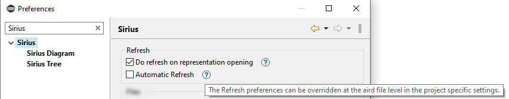
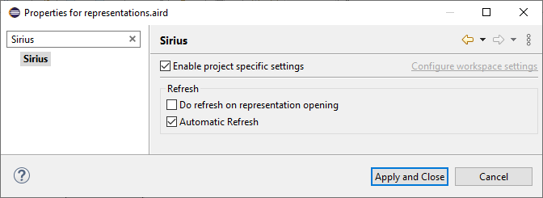

This document describes the possiblity to associate Sirius preferences to an aird file that will override the values defined in Window/Preferences/Sirius.
Window/Preference/Sirius give access to Sirius preferences and especially Refresh preferences.

These preferences are used for every aird file unless there are overridden.
It is possible to override these preferences for the main aird that is the aird used to open a Sirius Session.
Note that, in non modeling project(legacy project), there may be several main aird.
The user can see and change the preferences using Properties dialog, contextual to an aird file.

If
Enable project specific settings is checked, the value of the preferences can be set for the selected aird.
It will overrides the preference displayed in Window/Preferences/Sirius
Note that the preferences are stored in the project in
<project>/.settings/<qualifier><aird_uid>.prefs